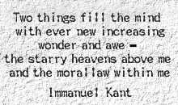
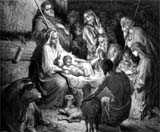
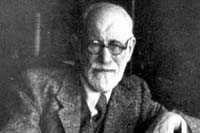

|
时间过得很快，今天是最后一个晚上。我盼望今天晚上听完了以后你对神的了解和认识有更清楚的基础，你对启示的意义有更正确的明白。因为现在有很多的基督徒常常说「我蒙神启示，神启示我」，我很怕他们写下来我们就多一本《启示录》。在圣经里面只有一本《启示录》我们就搞得头昏脑胀了，如果现在还有千千万万的人得到启示，我们多加几千万本《启示录》，那就麻烦得不得了。
|
|
感谢上帝，我们基督徒可以有最好的音乐来事奉上帝。一个很大的音乐指挥家叫做伯恩斯坦 (Leonard
Bernstein, 1918-1990)， 他说巴哈 (Johann Sebastian Bach, 1685-1750) 的《马太受难曲》
(St. Matthew Passion) 称得上是少数一些所谓「启示」的音乐 (Belongs to about couple pieces of
music called the revealed music.) ，换句话说，像《弥赛亚》这些都是特别蒙上帝启示的音乐。
我们怎样界定「启示」这个字？这两个晚上我试试看把启示的观念放在一个很广的地步。人是唯一明白真理的，因为神造人的时候就把这种可能放在人里面，而神的本身是真理的源头，所以神就成为「启示真理者」，人就成为领受真理的「被启示者」，而一切的知识的可能就根据于神的启示。神在自然界中间启示了�k创造的作为，所以被造界就启示了神的荣耀。这样，透过被造界我们就看见了某一些神的作为，对受造范围里所领受的一切的知识也变成启示产生出来的。所以
我们借着受造之物我们知道神的永能和神性，我们也知道神是存在的。
我们昨天提到了「自然启示」或者「普遍启示」的不足性，而且不能单单透过普遍启示就可以认为我们有整个性的真理，所以神就赐下了特殊启示。特殊启示是明白普遍启示的钥匙，特殊启示是正确的明白、解释普遍启示的原因。所以今天晚上我会特别提到这个题目神的「
特别启示」。
（我不知道这个扩大器在哪里？请把中音和低音都放低三分之一。）现在你会听得更清楚了，这样我就给他「特殊启示」了。有一次我在菲律宾讲道的时候，我在一个体育馆里面讲道，回音乱七八糟，我就自己跑到这个地方来调整扩大器。有的人说「你不要去，你不要去，我们是做人客，不要管人家的。」我说「不！讲道的时候我做主人，他们做人客。」所以把就把它改了，后来聚会完了以后，那校长说「奇怪，你一来大家就听到很清楚，平常听不清楚。」「每一次我们在
这里都听不清楚，为什么今天这么清楚？是不是你的声音很特别？」我说「不是的，是你们的礼堂很特别。」「特别什么？」我说「特别不好，所以你平常听不清楚。」那你调音的时候，每一个人是不一样的，男人不一样，女人也不一样的，每一个人的音质都不一样的，所以你一的要很敏感的把它调得清清楚楚的。基督徒是上帝的儿女，上帝这么聪明，基督徒这么笨这是不可以的，所以我如果信耶稣以后更笨我就不要信耶稣了。请问你信了耶稣以后有没有更聪明一点？有没
有？如果还没有，可能你的牧师有毛病，再不然就是你有毛病。我们要更聪明才对，因为神启示就是要人更有智能，对不对？所以我们要明白启示。
好了，言归正传，带圣经来的请把圣经高举起来，有物为证。专门带圣经的不一定常常读圣经就是了。手放下来。
好，我们现在看几处的圣经。我们先看希伯来书第一章。希伯来书第一章，翻到一同来读第一节一直到第三节，一同开声来读。
「上帝既在古时借着众先知，多次多方的晓谕列祖，就在这末世，借着他儿子晓谕我们，又早已立他为承受万有的，也曾借着他创造诸世界；他是上帝荣耀所发的光辉，是上帝本体的真像，常用他权能的命令托住万有，他洗净了人的罪，就坐在高天至大者的右边。」
只有这三节的圣经就把所有宗教书里面所有人不可能知道的事情都写下来了。所有的宗教没有一个经典把关于与宇宙以及宇宙背后的因的关系讲得这么清楚。我们再读一遍的时候，你好好思想。
「上帝既在古时借着众先知，多次多方的晓谕列祖」，这句话就是说「借着先知向人讲话」。第二节：「就在这末后的时代，借着他的儿子来对我们说话」，这个儿子是谁呢？就是耶稣基督。「上帝早已立他为承受万有的」，这个是 Omega Point，历史的结束。「也曾借着他创造诸世界」，这个是 Alpha Point，是历史的起点，而且「创造 诸世界」。「诸世界」，不是单单一个世界。「他是上帝荣耀所发的光辉，是上帝本体的真像，又用他权能的命令托住万有。」接下去，「他洗净了人的罪，就坐在高天至大者的右边。」
所以在这一段圣经给我们看见很奇妙的，很完全的基督论的工作。基督论的工作是什么呢？基督做了只有神可以做的三种工作，在这简短的记载里面已经启示出来了。
第一、基督做了创造之工。第二、基督做了救赎之工。第三、基督做了启示之工。
在哪里看见这三大工作呢？
第一样、「他创造了诸世界」，不但如此「又用权能的命令托住万有 」 (The creator is also
the sustainer of the universe.)。 他不但造了，他又护理了。所以这个保护的工作，托住的工作，这是耶稣基督对宇宙之间的工作。这个在神学里面叫做「护理之工」
(providential work)， 神护理、保固、保全、保存他所创造的万有的工作。
第二样、「他洗净了人的罪」，这是关系被造之人的护造之工。人在罪中堕落了，基督洗净了人的罪就把人性带到最完善的地步。
第三样、「他是上帝本体所发出来的光辉」，好象「没有人看见过太阳」。
|
|
你们看过太阳吗？看过没有呢？我没有看过，只有看见「太阳光」。你看过太阳？那你好厉害。那你看见太阳黑点有几点，多少大点？我没有看过太阳，你们的眼睛比我好，我只有看见太阳的光，没有看见太阳的本体。太阳的本体已经被那个光辉代替了，而光辉把本体照射出来，所以我所能见的是照射出来的光辉。
|
那么，这个太阳的本体我没有看见。照样，上帝从来没有人看见，但是上帝所发出来的光辉在基督的身上给我们看见，所以这是启示之工。
神的三大工作，「创造者」、「救赎者」、「启示者」，基督都显明出来了。所以这里给我们看见这个特殊启示这个范围在里面。
我们再看第二段的圣经，我们看提摩太后书第三章，我们来看最后几节，从第十五节开始。「并且知道你是从小明白圣经；这圣经能使你因信基督耶稣有得救的智能。」第十六、十七节大家一同来读，「圣经都是上帝所默示的，于教训、督责、使人归正、教导人学义，都是有益的；叫属上帝的人得以完全，预备行各样的善事。」再一次，「
圣经都是上帝所默示的，于教训、督责、使人归正、教导人学义，都是有益的；叫属上帝的人得以完全，预备行各样的善事。」
我们最后看彼得后书第一章二十和二十一节，翻到我们大家一同来读 ：「第一要紧的，该知道经上所有的预言，没有可随私意解说的；因为预言从来没有出于人意的，乃是人被圣灵感动说出上帝的话来。」
大家再念一次，第二十一节「因为预言从来没有出于人意的，乃是人被圣灵感动说出上帝的话来。」「人受圣灵感动说出上帝的话来。」 我们大家再一次低头祷告：
「主啊，我们感谢，因为你的恩你的爱吸引我们到你面。恳求你这个时候借着你真理的圣灵，就是启示圣经的上帝对我们每一个人理性光照，引导我们，对我们心灵的深处说话。主啊，求主你开通我们的心窍，求主你引导我们的思想，使我们以悟性来到你的面前，领受真理给我们建立的信仰，你听我们的祷告，把你无用的仆人交托给你，求主你给讲的、翻译的同感一灵把你的真理传讲得清楚，叫我们众人被你引导，进入你那测不透丰盛真理的奥秘的深处里面。主啊，你听我
们的祷告，我们在你面前这样祈求，奉主耶稣基督的圣名求的。阿们 。」
(Please a little bit increse the bass, thank you very
much.)
这样你们就不会太刺耳了，因为有一些的声音如果低音不够的时候，你听了十五分钟会感到很疲倦，现在盼望比较平衡一点。
好，我们就开始今天的讲座了，我们提到了神的启示有两个大的范围 。第一个范围就是普遍的启示，普遍的启示是赐给每一个人的，普遍启示的目的乃是要叫人认识某一部份真理，也就是对神自己有一些基本的了解。所以「上帝的事情人所「能」知道的」，换句话说那些人
「不能知道」的不在这个范围（普遍启示）里面。「隐藏事是属耶和华， 但是显明出来的事是给我们的」（参：申命记：29 章
29 节） ，所以神就把一些显明的事告诉我们了，把另外一些隐藏的事等到时间到了才慢慢启示出来。
在马丁路德的神学思想里面， 有神显明的一部份，the revealed part of God, and
another part is hidden of God. 被隐藏的上帝的那一面和向人显明出来的神的这一面，有不同的地方，但是却绝对不可能在被显明出来的一部份与隐藏的一部份是冲突矛盾，那是不可能的。那么在显明给我们知道的这些，在自然界中间人人可知道的这个叫做「普遍的启示」。（这只笔不行，昨天有哪一个人带笔来，今天有没有再带来？有没有，这个笔写了就不能擦。今天这只笔，又有没有给我海报纸，所以对讲员招待不周。谢谢你，这个笔就可以擦掉了。所以罪恶有两种，一种是不可赦免的，一种是可赦免的。没有办法擦掉。用口水吧，没有错啊，虽然不大卫生，但是没有错，耶稣用口水医治过人的。）好了，我们讲下去了。那么，这个普遍启示是神赐给每一个人的，普遍启示是在被造界的时空中间没有收回过的。所以当太阳还继续出现的时候，宇宙还继续运行的时候，也就是神的荣耀继续不断彰显的一天，普遍启示未曾停止过，这是继续不断照常的启示，这是一个
consistency。所以我们每次看见宇宙的奥秘，创造的荣耀，我们就看见神是存在的。但是这位存在的上帝是一位怎样的上帝？这就不是普遍启示所能告诉我们的了。而普遍启示成为我们对神信仰很基本的种子，这是一部份的真理，这个起步的真理和起步的信心我们绝对不能压制它，因为罗马书告诉我们，「上帝的忿怒临到那些压制真理的人」，和合译本翻译成「抵挡真理」（罗马书：1
章 18 节），但是希腊文原文的意思是「压制真理」。 换句话说神已经把这个普遍的启示赐给人了，所以人已经知道神是存在的，已经知道神在不见界中间与能见界的受造有一个不可分割的关系。而这个初步的真理的认识就成为一个信心的小种子，这个启示已经放在人里面。
所以从外界来说，「造化」是神存在的见证。从内证来说，「直觉」是神存在的内证。从外面，从里面神印证�k是存在的。所以普遍启示的外在见证 (external
witness) 叫做「创造」 (creation)， 内在的见证 (internal witness) 叫做「直觉」 (intuition)。
康德 (Immanuel Kant, 1724-1804) 是一个不容易随便讲信仰的人，所以在他的哲学系统里面把这个「知界」分成两个范围，一个是「本体界」
(noumenal world) ， 第二个是「现象界」 (phenomenal world)，phenomenal world 就是「现象界」。 「现象界」就是在我们可以接触的范围中间可看到的现象，这个感观世界的接触点叫做「
现象界」。但是这些现象界所给我们的，无论透过理性的分析，或者感观的传递所得到的知识非常皮毛的。所以我们的知识只能在这个范围里面。在现象里面有「本体界」，而这本体界不是人的理性可以达到的。
换句话说， 本体界是一个不可能知道的界，这个在德文叫做 Ding unsicht， 的意思就是物的自体， 这个用英文表达就是
thing-in-itself。
|
这个 thing-in-itself 的意思是什么呢？你现在看看一个人，你看见的就是他的鼻子，他的面孔，他的体态，他的姿势等等。但是人之所以是人，那个人的本体到底是什么呢？你没有办法完全去摸到他，所以你所见到的一切都是现象，不是本体。比较靠近佛学的名词来说，这个叫做「物如」，比较靠近佛学的名词。
|
|
thing in itself. 这个 Ding unsicht 是物的自体， 或作物的自体 ，这个叫做「本体界」，这个无法知道的。所以，从康德的思想来看
，我们的知识所能构到的范围限制不过是在 phenomenal world 里面，但是在本体界里面，我们没有办法知道。
那么，如果你问康德，「那个本体界里面的东西到底是什么呢？」他说在本体界里面一共有三样的东西。第一样的东西就是关于神的本身 ，所以我们没有办法知道。第二就是不朽的本身，我们没有办法知道什么叫做「不朽」，第三个就是自由的本身，什么叫做 liberty 我们不知道。所以 God, Liberty and Immortality 三件事情是属于本体界的。那么，这样，康德就留下了英国可能达到一个不可知论
(Agnosticism) 的开始。不可知论者是比较诚实的人，就像孔子说的 「知为知之，不知为不知，是知也」（《论语》为政第二）。但是如果他不知，他就代表全人类说「全人类没有人可以知」，那个用知表不知。
Wrongly replace all the human being by saying 'nobody can know bescause
only simply he cannot know. 所以就是这样的简单。所以不可知论是一个又诚实，又不诚实的东西。
好，现在我要你用你的头脑了，你说「知不知」？他说「我不能知。」那么不能知是表示「真的不能知」吗？他说「真的不能知。」那么 ，你真正知道是你不能知吗？他说「我明明知道我是不能知」，所以他正在用他的「知」表达他「不能知」。因为他自己不能知，他就代表全世界，所以全世界的人都不能知。而这些人在十九世纪是很聪明
，很聪明的人。最重要的代表人物有两个，第一个是赫胥黎 (Thomas Henry Huxley, 1825-95)，
另外一个是史宾塞 (Herbert Spencer, 1820-1903)，史宾塞和赫胥黎是两个很大的不可知论者。那么对不可知论他们认为 No
possibility of knowing the ultimate reality in the universe. 但是他们讲这些话的时候好象他们很懂得这就是一个「可知」的事实一样。我们应当用怎样的态度来面对这种思想？
很简单， 我个人是用 Agnostic attitude to response the agnosticism. 以不可知论来对付不可知论。 同样的，可以用怀疑
(Skeptic) 的精神来处理怀疑论 (Skepticism)。 所以史宾塞有一次在一个科学的会议里面， 这个大科学家， 又是社会学家，他说「 I
think there is nothing abslute in the world. 」（世界上没有任何东西是绝对的）「 There is
nothing abslute in the world. 」他讲完了以后，他就坐下来了。 有一个年轻人就站起来， 他说「 Mr. Spencer,
did you say there is nothing abslute in the world? 」（史宾塞先生， 你是说世界上没有任何东西是绝对的是吗
？ ）「 Yes, I did say it. 」「 Do you believe that? 」「 I beleive it. I believe
there is nothing abslute. 」「 Do you beleive that theory abslutely. 」（你绝对相信这个理论吗？
） 「Um....yeh.....I beleive abslutely that there is nothing abslute. 」（嗯....
我绝对相信世界上没有绝对的事情。）你看见这个毛病吗？所以那一些不可知论和怀疑论理论的基础本身就是一个 self defeating theory。 所以当康德提到「我们没有办法构到那个
世界」的时候，他先把自己站在一个「否定启示」的地位来讲。因为康德否定了 revelation， 康德就站在一个没有启示可能的地步来讨 论本体界，很自然他就达到那个答案去了。但是康德不要基督徒随便接受信仰，这正是我今天也盼望基督徒不随便接受信仰，我们不可以
随因为别人信耶稣我也跟着信耶稣，那种信徒做我教会的会友，我就会把他踢出去。但是相反的，你也不能因为别人不信，你也随便跟着不信。因为那样的人应当把他踢进来。从头好好教导他，因为这个信仰的问题不是「跟人跑」的问题，你自己要有责任感。那么，当康德反对所有对上帝存在的证论的时候，我们昨天提到这一方面，我们提到了
Natural Theology 被改教家 (reformer) 所抗拒。为什么呢？ 因为自然神学是靠着堕落的理性，以人为本盼望找出证据证明上帝存在，
所以在历史上你听见有宇宙论证 (Cosomological Argument)， 还有本体论 (Ontological
Arguemnt) 还有目的论
(Teleological Argument )。那么这些宇宙论、本体论还有目的论的证据盼望证明上帝，基本的论证还是 Cosomological，就是从受造界人的理性要认出
上帝。 但是这个 reformer 早就看见这是不可能的事情， reformer 回头是相信普遍启示不是接受自然神学。所以十六世纪改教家所给我们的红灯，很多人不去注意，到了十八世纪的时候，我们看见康德就出来反对了。十九世纪的时候，祁克果
(Soren Aabye Kierkegaard, 1813-1855) 再出来反对。 二十世纪的时候罗素 (Bertrand
Rusell,
1872-1907) 再出来反对。
所以在康德的思想里面，他拒绝所有证明上帝存在的论证。到了祁克果的时候，他又再一次拒绝所有证明上帝所有的论证。到了罗素的时候，在他的《为什么我不是基督徒？》这本书里面他又拒绝所有的这些论证。那么，请问，这三个人是不是都是站在否定上帝存在的立场呢？不是的，康德是站在不承认启示的必要而把宗教拉到道德范围的一个人，所以他应该说是 father of morden agnosticism。 但是祁克果是站在一个个别与神交通，是强过用理性的论证来证明上帝存在
，所以祁克果是 father of the modern existentialism。但是罗素的动机完全不一样，他是站在一个根本存心怀疑要抗拒基督教，所以他是一个几乎等于无神论者的。所以在同样反对论证的三个人在不同时代的表现，我们发现他们都有不同的动机来处理同样的事情。
那么，当康德说「证明上帝存在很难很难」的时候，那些反对上帝存在的人就高兴得不得了，因为连康德都说证明上帝存在很难很难，但当他们高兴还没有完的时候，康德讲另外一句话，「证明上帝存在很难很难，但是证明上帝不存在更难更难。」这些所有话的意念终归是要讲什么呢？乃是要告诉我们，「神不是在论证的范围里面」，所以在 argument with evidence 里面的范围是太肤浅的，是没有办法构到神那里去。所以圣经从起初就很正宗的，很原本的告诉我们，是透过「启示」，不是透过「论证」。
普遍的启示使我们明白上帝，在某一个固定的范围里面，知道上帝的存在，我们知道上帝的永能，我们知道上帝是创造者，所以把�k的荣耀，把�k的智能，把�k的能力，把�k的永恒性表达出来。但是神不但把普遍启示赐下来，�k还把特殊的启示赐下来。那么，「特殊的启示
」和「普遍的启示」不同的地方在哪里？
第一、特殊的启示不是每一个人都领受的，是透过固定神所特别选定的人。
第二样、特殊的启示把更深入，对神自己的位格，神自己的本性和神工作的了解启示出来。
所以这样，只单单认识神的存在，你没有办法与这位神发生很正面而深入的关系。所以只有透过特殊的启示我们进到与神发生正面关连的可能性。那么你说「如果特殊启示不是每一个人有的，那么我们怎么可能没有领受特殊启示能与�k发生关系呢？」我刚才讲一句很重要的话，「特殊启示不是赐给每一个人的，但是特殊启示透过某些人带到世界上来了。所以结果众人也照样可以领受特殊启示的好处，但是不是直接领受神这个特殊启示在他们身上。」
普遍的启示我们看见了外证就是「造化」，而内证就是「直觉」。
|

|
康德最后就讲了一句不能否认的话语，他说「有两件事使我越久越惧怕，第一件事就是闪着星光的天空，第二件事就是继续说话的良心。」他说「在我内心中有继续说话的良心，在外面有闪着星光的天空。」其实这两句话就要表达罗马书第一章十九、二十节所讲的 ---- 外面的显明，里面的显明。
|
这句话康德是不是知道原意已经在圣经里面？无论如何他表达出来了。 所以如果今天你找到了在 Konigsberg，在波兰境界从前出于普鲁士，出于德国的那些里面王群里面的坟墓，你找到康德的墓碑上就刻着这一句话，「两件事使我越来越惧怕，天上闪着星光的天空，我心里说话的良心。」我们看见特殊启示也透过两个很大的范围。第一个范围就是神所特选的人，先知们、使徒们领受了神特殊的启示。第二个大的范围，就是道成肉身的耶稣基督自己就是神的启示。所以，这样神要对人说话，从无声到有声，从普遍到特殊，从外在到内在，从普遍范围到个别的认识，从受造界到创造者自己的到来，就可以进到完全的地步。
所以这里的圣经告诉我们，「古时借着先知多方多次的对我们说话，末后借着�k自己的儿子来对我们说话。」这样，神向人的启示就在基督和圣经里面完成了。这样，道在人间，透过文字的表现这个叫做「
圣经」，透过肉身的表现，这个叫做「基督耶稣」，所以特殊启示就在两个大的范围里面赐下来了。特殊的启示借着圣经赐下来，特殊的启示借着基督赐下来。在圣经里面我们更完整的认识神，在基督里面我们更真实的认识上帝，而神要对人所说的话的最高峰就是在基督道成肉身的一切言行和生活以及他所成就的救赎之工里面。感谢上帝！
这样，这一位遥遥在至高之处的上帝并不是不可能知道的，所以基督的启示就结束了所有宗教里面所谓对上帝的寻求。基督在人间的显现就把至高上帝的本体一切的丰盛和奥秘都把�k显明出来了，这是基督教的信仰与所有宗教不同的地方。你把这个搞清楚了以后，你就发现在圣经里面耶稣讲了一些从来没有人可以讲的话，没有人曾经讲过的话，没有人敢讲的话，没有人有资格讲的话，而基督讲过。比如说，「你们看见我就是看见了上帝」（参：约翰福音：14 章 9 节）。谁讲过这个话？毛泽东讲过吗？他最多说「你看见江青差不多等于看见我。」没有人可以这样讲的，苏格拉底不可能这么讲，柏拉图不能这么讲，「你们看见我就是看见上帝。」不能这么讲的，只有神的本身的显现才有这样的资格和权柄讲这样的话。所以你看见众宗教正在寻找真理的时候，众哲学家正在研究真理的时候，而众教育家在高举真理的时候，耶稣不是说「我正在追求真理，来，跟我一同跑。」耶稣说什么呢？
---- 「我就是真理！」你看见了没有？单单这一句话已经是任何一本书，任何一个哲学体系，任何一个宗教信仰，任何一个教育制度，任何一个社会文明没有办法达到的最高的成就。这不是从下到上的一个成就，这是从上到下的一个启示。所以特殊启示就在圣经和基督的身上向人显明出来了。
我不怕青年人看书，我只怕你没有好好研究书。你尽量看书，尽量买书，而你好好比较研究的结果，你就发现只有这一本书（圣经）才够称为神的特殊启示。这一本书里面记载的耶稣基督才够称为神自己在人间。
这样，道在人间就有两个大的范围，就是圣经在文字上的显现，文字的道。我们中国人明白一句话叫做「文以载道」，这都是道在文字显现中间一种受造界的模仿。我们每天讲话的时候，有的时候讲得比较象样，有时讲得很不象样。「你讲什么话？真是不象样！」「你做什么人？真是不象样！」你们年轻人听这种话，应该问他，「那么，应该怎样才象样？」那个「样本」是什么呢？每一个人都在讲话，每一个人都在讲文章，而文章都要把一些真理表达出来，而圣经说，「我
就是真理」，上帝的道就是真理。所谓的「象样」，这个所有「文以载道」都是受造界对文字的道的一个模仿。所有的圣人君子都是肉身的道在世界上生活的一个模仿。所以在圣经里面我们找到了真正的道，在基督里面我们看到了真正至善的人性。这样，神的启示不是单单一个受造界模模糊糊的启示了，神的启示已经进到了真正带领思想的真理引导理性的范围里面。神的启示已经到了基督的生命引导充实我们的启示范围里面。这样，你看见了在第一天我们就讲了，「有位格
之真理的本体」 (The reality of the person of the truth Himself) �k来到了人间。这样，「真理」和「生命」就发生关连了。在自然启示中间，那个片断的知识可以在特殊启示里面找到了统一性的关连的动力。在那个生命对真理的欣赏和使用的科学范围里面，你可以转到在特殊启示中间在基督的生命里面享受丰盛真理的应用。
这样，真理就不在乎单单是在「受造界的片断知识」里面而已，真理也进到「伦理界」、「生活界」更进到「永恒的生命的本体」里面了 。所以只有在神的特殊启示里面，你找到统一性的真正的完整信仰。
只有在神的特殊启示里面，你享受了真正生命与永恒之间的关连。所以，当耶稣基督问彼得说「你们说我是谁？」的时候，「你们说我是谁？」和「我是谁？」是不一样的。耶稣一问「我是谁？」的时候，「有人说你是耶利米」，「有人说你是以赛亚」，「有人说你是以利亚」，「有人说你是那先知」，「有人说你是施洗约翰砍头现在再转
回来了」....。这个是叫做什么？这个叫做「博士论文」，把这个理论，那个理论搬出来变成一本书叫做「博士论文」。 ，这个 modern academic
work 就是这样。 耶稣说什么呢？ 耶稣说「我不问你巴特 (Karl Barth, 1886-1968) 说什么，布特曼 (Rudolf
Bultmann, 1884-1976) 说什么，盖士曼 (Ernst Kasemann, 1906-) 说什么。我 不问你莫特曼
(Moltmann, Jurgen, 1926- ) 说什么、 潘宁博 (Wolfhart Pannenberg, 1928-) 说什么， 、 赫斯安
(Charles Hartshorne, 1897-2000) 。 我不问你怀海德 (Alfred North Whitehead,
1861-1947) 说什么，....。我问你，「你说我是谁？」
彼得听了这句话，「咦，好象不管别人说什么，那我说什么呢？」彼得讲两句话，他说什么？「你是基督，你是永生上帝的儿子。」你以为这两句话很简单吗？这两句话太大了。
|
我稍微分析这要句话，什么叫做「基督」？基督就是在历史中间被盼望的那一位，当他来的时候，解决了一切问题。当他来的时候，他要把一切的不义消除，他要把真理彰显，他要使人类得着真正的盼望。所以基督是整个历史的中心点，基督是完善的来源，基督是至高理想的具体化，基督是一切在历史中间被应许的成全，基督是盼望的终点。
|

|
但这个弥赛亚观念，基督的观念，在犹太主义里面有，在旧约里面应许了，在很多的了宗教里面都有。但所谓的基督是历史的中心，上帝的儿子，就是暂时与永恒的交点叫「上帝的儿子」。神的儿子来到人间，永恒与暂时交界在一起，他是超历史的，超暂时的整个的焦点叫做基督是上帝的儿子。这个启示建立了基督教神学的最开端的一个认识。所以基督论就是特殊启示的中心点，为什么这样讲呢？因为当彼得回答这一句话以后，耶
稣怎么反应呢？「西门巴约拿。西门，约拿的儿子，我告诉你，你这一句话不是从有血肉的指示你的，乃是我的父指示你的。「我的父指示你的」， 这个是 revealed Christological undertanding, 「领受启示以后的基督论」。不像那些新派的人凭自己的臆测来评论到底耶稣是谁？
从康德一直到现代的新派的思想都犯上一个很大的毛病，就是否认启示的必须性，所以他们就根本没有办法真正了解特殊启示所要带来的中心就是那位基督，上帝的儿子。但是感谢上帝，耶稣在第一次领受信徒对他公认的信仰的时候，彼得说「你是基督永生上帝的儿子」，耶稣怎么回答呢？「这是我的父所指示你的」，这是启示的基督论，所以在启示里面你找到了整个神的心意的中心在哪里。
好， 我们看见了这两方面了， 在文字里面的道，这个叫做 Rhema Theos 就是上帝的道是用，是用
Rhema theos，是用文字的。
第二，在肉身里面的，道成肉身的，这个叫做 Logos Theos，就是上帝的道，这个是位格性的。位格性的道和字面性的道（是言语的），
当然不能相提而论，但是在这两个范围里面我们看见上帝的特殊启示了。在普遍启示里面所要告诉人的是「神的存在」，那么在特殊启示里面要告诉人的是什么呢？就是要把那被造界真正的意义表现出来。这「意义」这两个字，是很有意义的，意义是很有意义的。那么给意义下定义，到底你要怎么明白意义的意义是什么？什么叫做「意义」？什么叫做「意义」？（有内容，有方向，有目的），这个是很对的
，很深奥的一个东西，意义。而人是唯一能明白意义的，等到你说「 做人没有意义」，你就想自杀了，对不对？所以每一个自杀的人都发现生命和意义很难连在一起。而继续活下去的人都把生命和意义连在一起了。
你没有听过一只猫说「做猫没有意义」？人是唯一对「意义」有所觉悟的人。意义把事迹记载下来，发生的事情千千万万为什么只记载几样下来？因为那个事件和意义发生关系才值得记录。而每一次记录或记忆都是反时间性的，因为当时间向前的时候记忆就要向后。一九八
九、一九九０、一九九一，这个是叫做「时间」，但是记忆说「不！ 一九二八、一九二九、一九三０」它向后。但是记忆和记录的向后不等于人性的退后，因为这个记忆的向后不等于退后，因为记忆超越时间所以就在永恒里面有了关连。所以在奥古斯丁的思想里面记忆是永恒的一个记号，「我记得」，现在时间过了，我还不要让时间淘汰记性，我把它记下来使我永远记得。所以「记录」和「记忆」就和「永恒」发生关系了，那么人是唯一明白意义的。对受造界的意义的正解从哪里来的呢？人被造成为 interpretor，这是人受造的先知功能， 我再讲一次。人被造成为宇宙的诠释者，所以我们看见万有的时候，我们就有一些解释性的话语出来了，这个解释性的话语一出来的时候也就是人文化使命中间的「先知功能」。这先知功能，这个是很深奥的东西，我想今天教会应当更深更准确的明白整套的基督教的思想系统，否则的话我们没有办法影响文化。
当我怎样去了解正确的意义来正解这个宇宙的时候，这个叫做「宇宙观」 (World View)。 这个宇宙观或者德文叫做
(Welt?)，就是我怎样看这个世界。中国人看世界看来看去只看「钱」，你懂不懂？你看到钱，道德也不要了，人格也出卖了。所以如果你宇宙观清楚了，价值观清楚了，你对整个被造界的价值和意义正解了，那你做人是很稳的，所以有很基础的。那怎么可能对宇宙产生正解呢？你要准确意义的了解，而准确意义的了解从哪里来的呢？从创造宇宙者怎么造宇宙？为什么造宇宙？造宇宙的终极目的是什么？用特殊启示告诉你，你才会知道。所以特殊启示使受造界有一意义性的正确观念，这个是特殊启示的功能。特殊启示使我们对科学知识产生了正用的功能，我们昨天就稍微提到这一点。
一个非基督徒的科学家，他的科学知识只能服务于他个人的观念和他的利害关系，因为他在一个片断的支离破碎的生活中间应用他的科学功能。但是基督徒从特殊启示看到了普遍启示的正确功用以后，他在普遍启示里面所领受的一切知识的了解和普遍启示的自然为了荣耀上帝而被造的「世界观」接连起来了。他所有的都为了荣耀上帝。刚才李牧师祷告的时候讲了很重要的一句话语在祷告词里面 ---- 「我们活着最大的目的是为了荣耀上帝。」那个就是借着特殊启示去了解我们整个生活的目的，包括我们对自然启示所领受的一切知识，也与特殊启示结连变成整体了。这种信仰所发出的力量是那些非基督徒科学家没有办法了解的。
特殊启示使我们对普遍启示产生纯正意义的正解；特殊启示也使我们对普遍启示领受的科学知识产生正用，就是荣耀上帝。特殊启示对我们在世的生活，我们明白的正道，我们要神为自己的名引导我们走义路，就是那正的道。
|
|
这样，我们的生命，我们有一种很特殊的了解，我们为了荣耀上帝，无论生命长短，无论家道富贫，无论人对我们的毁誉多少，所给我们的称赞，所给我们的攻击多大，都没有办法影响我们那个正道的生命的使用。因为在生命和敬虔的真理里面，我们找到了生命真正的价值和意义，就是对物和对己，从特殊的启示领受的恩惠。
|
但是这些还不是最高峰；最高峰就是明白神的自己，然后透过神明白自然，透过基督明白人性，透过这些特殊的启示神怎样把自己向人显明。我们明白神的本性，或者你所说的神的属性。这位神不但是存在，�k是一位怎样的上帝？我们每一个都知道有一个叫做马哈地的这个人存在，但是这个人到底是怎样的一个人？我想没有人比他的太太更了解他，因为他太太每天在他身边，所以他对别人不大好意思发脾气的，在太太面前可能一点没有遮盖就发出来。所以有的人介绍别人「这个人很好，很好。」他太太在旁边说「假冒为善！假冒为善！」牧师说「这个弟兄很爱主。」太太说，「哪里知道，前天晚上去夜总会，你不懂，我懂。」对不对？为什么呢？因为你对别人的启示是「普遍启示」，对太太的启示是「特殊启示」啊！当你和她签婚约的时候，你已经立约一生一世要光明正大毫无遮盖的启示给她了，这个叫做特殊启示啊！个别启示啊！启示到心里什么东西都讲出来了。你说「这个不不不.... 我只有讲一半，不讲一些。 」那么你的「特殊启示」叫做「半特殊启示」。神的特殊启示使我们明白神的本性。
第二样、神的特殊启示使我们明白神的计划。你看这是何等伟大的事情！在神的特殊启示里你看见�k的计划。
如果你的老板把整个的计划都告诉你，表示你大概是比较 executive 这一方面的人。那么你大概不是看大门的而已，不是的，你可以把整个计划都看见了。这整个的计划都告诉你，神把�k的计划告诉你。
第三样、特殊启示告诉我们，神的救赎 (the salvation of God) 告诉我们了。上帝把�k的救赎，不单告诉我们，而且实实在在施行在我们身上，借着基督所完成的救赎，借着圣灵实施这个功能。所以，这样，计划救恩的圣父，成全救恩的圣子，和实施救恩的圣灵就在我们身上成就。神又把那永恒的盼望赐给我们，所以特殊启示也可以称为是一个
relation of redeemption， redeemptive by nature. 是救赎性的一个启示，这些就完全超越了所有的宗教。所以刚才我讲一句话，「基督在人间的道成肉身的显现是启示的最高峰，而基督的启示就结束了所有的宗教对真理的寻求。」所以他说「我就是真理」。
好，现在我要在这本圣经里面给你看见特殊启示有很特别的东西是所有任何一本书所没有的。圣经是神的特殊启示，因为在这本书里面�k给我们看见一些很特别很特别的东西。没有任何一本书比这本书更清楚的告诉我们万物和万物的因，这一本书把整个宇宙之因都提出来了。科学的书只有在万物中间从现象找到一些片断知识。但是神的特殊启示，这本圣经把整个万有之因都提供出来了。
第二样、特殊启示把整个历史的方向也提出来了。没有任何一本书可以把整个宇宙固定的以后必发生的历史的方向指出来。这个对历史方向的肯定，成为神自我证实�k神性的一个很重要的见证。所以在这一点方面，神呼吁说「你们拿哪一个神来和我相比呢？有哪一个神像我可以指出末后的事情？
」（参： 以赛亚书： 40 章 25 节； 46 章 9-10 节）所以这是神性的一个记号，就是那超历史性的永恒者。
第三样、这一本书是唯一告诉我们整个时空的始终的一本书。时空、时间与空间怎么始，怎么终？没有任何一本书告诉我们更完整。时间要在神的创造里面开始，要在神最后的审判里面结束，空间也是如此，因为时空都是神所造的，神造了时空成为被造之物的容具，再把其它受造之物放在时空里面来定他们的方位和他们的时限。所以时空就在受造的起点，在基督里面找到了开始，在受造的终点，在基督里面找到他的结束。时空的始终，那阿拉法、俄梅嘎就是上帝藉以创造万有的道的本身。
第四样、上帝借着这本很特殊的书给我们看见人性的尊严是没有一本书，没有任何一个哲学体系可以相比的。这个是今天讨论人性的尊严、基本的人权、民主与自由、公义的社会....，这些所有的讨论一定要根据「人性的尊严」才有基础的。但是人性的尊严要根据什么基础才能建立起来呢？没有任何一个宗教交待清楚，没有一个哲学探讨清楚，但是在这一本特殊启示的圣经第一面里面讲清楚了
---- 人是照着上帝的形像和样式而被造的。人像神，大家说（重复）。不像的不必说，一、二、三，「人像神」。这句话什么意思呢？人就是不是神了，你懂吗？人家如果说「你像猴子」，你说「感谢主，不是猴子。」人家如果说「你很像里根。」哇！你很高兴，你不过「像」，你懂不懂？很「像」。你不要太高兴了。因为杀死他的时候可能先杀死你，因为你很像。「像」就不是「是」，「是」就不必「像」。大家再听一次，「像」就不是「是」，「是」就不必「像」，大家说（重复）。大声一点吧，「像」就不是「是」，「是」就不必「像」。所以人像神，这是人最大的尊荣，马上警戒我们，「你不是神，你不过有神的形像，神的尊严」，这是人性的基础。所以当北京要求民主自由不成功的时候， 他们说「
Give us democracy or death. 」邓小平说「 Ok give you death! 」邓小平没有办法给人民主的的，所谓民主是民做主，那么邓小平跑到哪里去呢？所以邓小平说「不如我做主。」那么如果中国那个时候就得到民主了，那也很危险，为什么呢？因为西方的民主有两个源头，这两个源头都探讨到人性的尊严的问题。第一个源头是人文主义的民主。第二个源头是神形象样式的尊严。所以
Non Christian image, non Christian concept of democracy is base on
anthropocentric speculation of human dignity. 但是 Christian concept of
democracry is base on theocentric revelation of the dignity of man. （非基督徒的对民主的观念和想象是建立在人本对人性尊严的臆测上，而基督徒的民主观是以神对人性尊严的启示为基础。）所以从苏格拉底时代那种野蛮性的民主，到法国大革命那种惨无人道的民主，可能构成二十一世纪同性恋合法化、世界乱七八糟的道德基础。但是在基督教人性尊严里面找到的民主的可能，是回到神的真理里面，以形像与本像的结合做基础的。
我想中国文化如果要有前途，要从神形象样式的人权基础上来建立对人尊严的了解。今年六、七月我在美国对许多大陆的学者传讲关于民主自由基础的问题。 我盼望其中有一些很 sharp 很 sharp 的 thinker 对中国文化的前途产生效用。
第五样、没有任何一本书像这本圣经很正确的交待这世界罪的因由在哪里？在特殊的启示中间把罪的因由或者病症把它很清楚的诊断出来。 今天整个世界文化的毛病是「下药不对症」。
|

|
弗洛伊德 (Sigmund Freud, 1856-1939) 的心理学没有办法把真正有心理病的人完全医好，因为他自己也有心理病。他自己有心理病怎么解决他人的心理病，对不对呢？所以你看心理学的时候多数看那不正常的人的书，越看可能你也不正常。怪不得最多自杀的人在美国是医生，而医生里面最多自杀的是心理医生。
|
他们应当是医治别人的，但是他们没办法，为什 么呢？---- 下药不对症。 真正的「对症」是什么呢？对罪的了解，对罪真正的了解使人的生命得回真正的意义，只有这本书告诉我们。
第六样、全世界没有任何一本书像这本特殊启示一样，告诉我们有一个灵界的大战。我们不是单单看见表面正在搞和平的运动，在看得见的表面的背后有一个灵界的大战，只有这一本书才能告诉我们。
第七样、天下没有任何一本书比这一本特殊启示的书，把那救赎和永恒的盼望带到人间。感谢上帝！这一书是神特殊的启示，在这本书里面，我们看见任何一本书办法相比的真理的表达。万有之因、历史的方向、时空的始终、人性的尊严、罪的因由、灵界的大战、救赎与永恒的盼望。请问，这样伟大的启示，虽然赐给先知，虽然透过使徒，神已经使他成为万国的语言已经交到你手中来了，基督也传给你了。请问，直到现在，你还不接受，你还不信，你还不信基督的人，请问
你要等到什么时候？你已经信基督的人，你为什么了解得这么迟呢？你做基督徒这么久了，你对你的信仰了解到多少？愿主帮助我们，给我们在神的启示里面找到了得救的智能，而在神的启示里面，找到永世的亮光。自然的光是不够的，只有借着特殊启示的光才把我们带到完整的地步，我们低头祷告。
请李院长带领我们祷告。
李建安院长：
「亲爱的父神，我们要向你献上我们的感恩，主我们心里面真的充满喜乐，因为主的真道何其的伟大，你也借着你的圣灵透过你的仆人使我们明白。然而主啊，我们知道，明白了还不够，我们需要主你继续的用你的圣灵光照我们，用你圣灵真理的灵再一次引导我们，使我们更深入的明白你的真道，使我们生命里面得着益处，使我们的命能够成为荣耀主你自己的生命。主，我们也想念到许多人听你的真道还没有真正了解，我们求主你继续在他们心里面运行动工，直到将来有一天，主你就看见他们在你面的悔改的心志的时候，他们就接纳主你做他们个人的救主，我们晓得这是圣灵的工作，没有人能够做，主啊，求主你恩待，求主感动。主，今天晚上站在你面前亲爱的弟兄姐妹们，我们再一次借着祷告把他们交在主你自己的手里，是你自己呼召，是你自己感动，我们深信主你必定自己保守他们奉献的心，以致于有一天他们都装备好的时候，就愿意走到你面前来，装备他们己，将来放在你手里面成为好的器皿。主啊，求主你接纳站在你面前的这些年轻人奉献的心志，我们深信主你已经悦纳，也深信主你将来必定要大大的使用他们。主，我们求主你继续恩待，虽然人的话语已经停了，你的真理继续不断借着圣灵在人心里面工作，以致于我们更认识，更认识神的时候，就更加爱神，我们怎么可能认识你而不爱主你呢？帮助我们过去在你面前的软弱，过去我们生命在你面前的污秽�a脏，求主用宝血遮盖之后，用你的灵感动刚强之后，使我们能活出活泼，荣耀神的生命，帮助我们每一个人。这样祷告，奉主耶稣的名。阿们。」
|